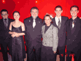
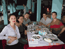
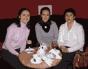
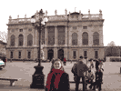
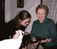
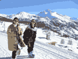
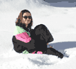
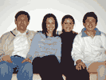

Para ampliar a foto clique sobre ela.
 [imagem histórica não recuperada: ../Foto/MiniCynthia88.gif (Cynthia, prima comunione. 1988)]
[imagem histórica não recuperada: ../Foto/MiniCynthia88.gif (Cynthia, prima comunione. 1988)]  [imagem histórica não recuperada: ../Foto/MiniGeraldoFam.gif (Família de Geraldo)]
[imagem histórica não recuperada: ../Foto/MiniGeraldoFam.gif (Família de Geraldo)]


[imagem histórica não recuperada: ../Foto/MiniDebCynGraViv.gif (Debora, Cynthia, Graça, Viviane)]




